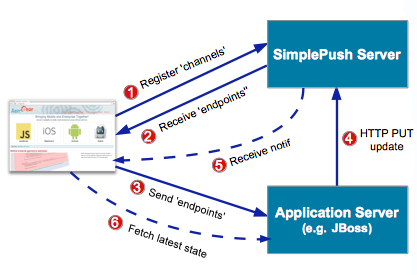
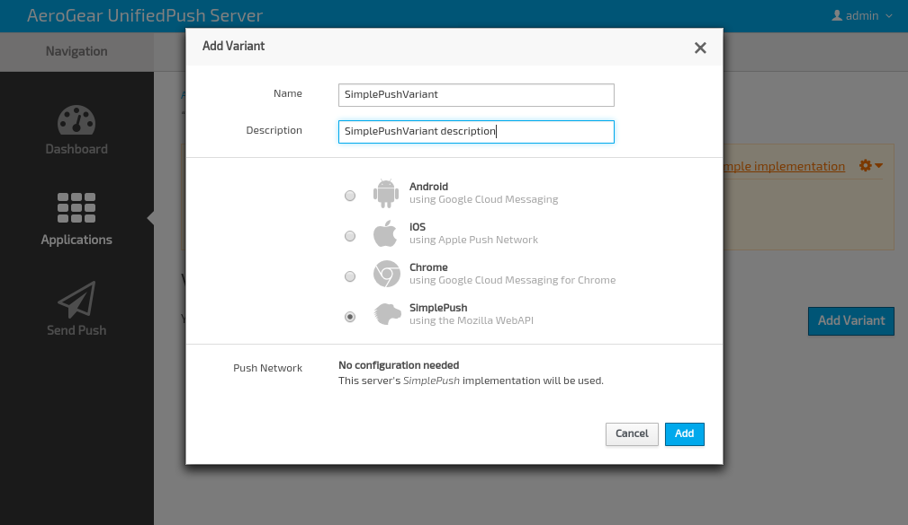
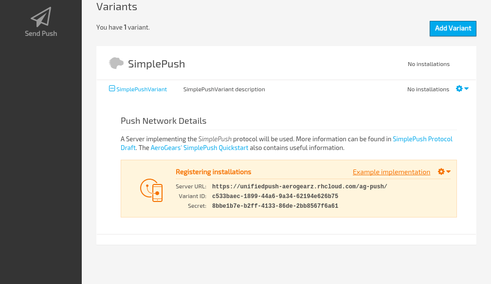
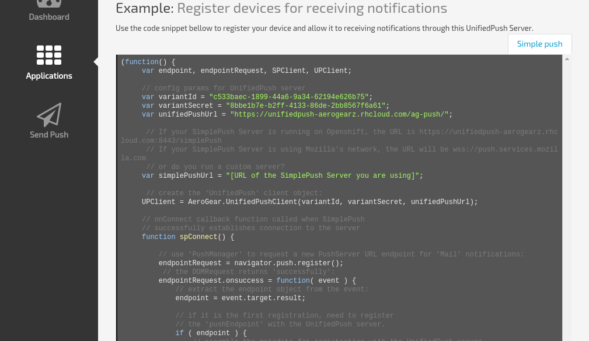
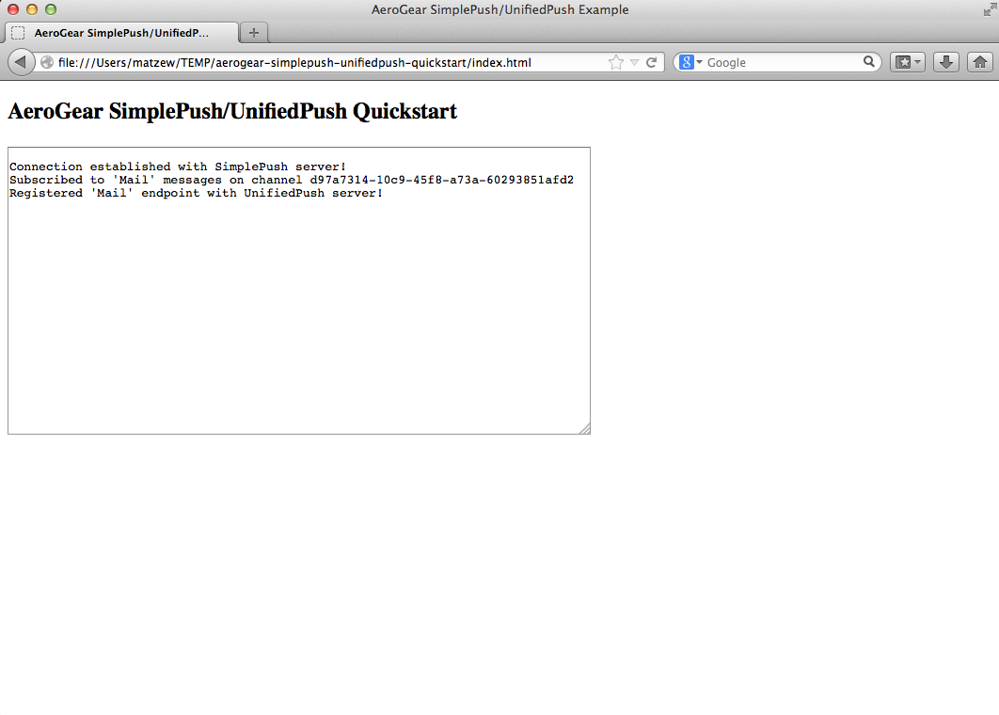

// register to receive notification updates for new posts in a fiction forum called 'tech'
var req = navigator.push.register(); // [1]
req.onsuccess = function() {
var endpoint = req.result;
// if it is the first registration need to post the
// received update endpoint to your application server.
if (endpoint.pushEndpoint)
$.post('/registrations/forums/tech/', { endpoint: endpoint.pushEndpoint })
}Using UnifiedPush with AeroGear SimplePush
The [AeroGear UnifiedPush](https://github.com/aerogear/aerogear-unifiedpush-server.git) server apart from providing support on pushing notifications to different mobile platforms (called Variants), it also supports pushing notifications to Web clients too. It includes [SimplePush protocol](https://wiki.mozilla.org/WebAPI/SimplePush/Protocol) support, Mozilla’s new emerging standard for push notifications, integrated into the server as another supported Variant.
The following step-by-step guides, will briefly introduce you to the concepts of SimplePush itself, howto setup the AeroGear SimplePush and UnifiedPush servers, and with the help of an example we will show you how to send notification messages to your web applications.
SimplePush Primer
SimplePush protocol is Mozilla’s new emerging standard for push notifications, conceptually based on Thialfi, Google’s own highly scalable notification service. Introduced first in Firefox OS, there are plans to bring support to it on desktop and mobile browsers as well. The primary goal of the protocol, as stated in the SimplePush specification is:
"To notify clients of changes to application server state in a reliable manner by ensuring that the client will always eventually learn of the latest version of an object for which it has expressed interest."
If you closely read the definition, one important fact arises. By the use of words 'notify' and 'eventually learn', the spec upfront suggests that the system is designed for data-signaling and not be used for data carrying. Once the client is notified for a change in the server state, the client may choose to connect to the server and obtain the most 'recent version' of the object. That is in pair with how mobile notifications systems work, where the notification is used as a method of signaling instead of carrying the message.
The protocol involves three components. A server component (the SimplePush server), responsible for pushing notification to web clients upon a change, a client component, a JavaScript API provided by the browser for web developers to use to register with the server and attach notification callbacks, and a third component, your application server (JBoss etc) where your backend application is running and changes in object state occur. The protocol utilizes WebSockets for real-time communication between the browser clients and the SimplePush server.
SimplePush Workflow
Let’s examine how the SimplePush protocol works with the aid of an example. A user ''Joe'' uses an online web forum application and wants to be notified when a new post is created on a topic he has expressed interest. To accomplish that, the application using the JS API, registers with a SimplePush server the 'channel' is interested in (here the topic name). The server replies with an 'endpoint' URL. The client then sends the endpoint to the 3rd party application server. Now, when a change in state occurs, the application server simply does an HTTP PUT on the endpoint URL informing the SimplePush server that a notification should be sent to client. The HTTP PUT payload contains a 'version' number of the object that is keep increasing every time the application server updates the endpoint. Once the notification is received, the client triggers a request against the application server to request the updated state (e.g. the new post).
| The client did not receive the data of the new post; instead it received a notification that it could fetch the latest data. |
The following diagram visually describes the workflow:

Primary advantages of using SimplePush are:
-
offloads the client to continuously poll your application server for changes in state.
-
offloads your application server for notification delivery and handling. It simply does a simple HTTP PUT on an endpoint when change in state occurs.
-
The SimplePush server is designed to be highly efficient in notification delivery as well as gracefully handle communication failures, server crashes etc. No need to start from scratch!
SimplePush JavaScript API
The API is straightforward to use and consists of two parts, registration of the channels with the SimplePush server and attaching a callback called when a notification is received.
Registration on the SimplePush server:
Receiving push notifications:
navigator.setMessageHandler( "push", function( message ) {
// --notification received--
// 'message.channelID' contains the ID of the channel
// 'message.version' contains the version of the object
// contact the application server to receive the latest updates e.g.
$.get("/forums/tech", function(data) {
// data should contains the latest posts
});For a more detailed information of the SimplePush protocol, we suggest you to visit Mozilla’s protocol page. Further, if you want to see how SimplePush can be used under Firefox OS, Mozilla has written a detailed article and can be found in here.
AeroGear SimplePush JavaScript API
Currently the SimplePush API is supported only in Firefox OS v1.1 and in custom builds of Firefox. AeroGear already provides a polyfill library that can support other browsers as well. It leverages SockJS on the client and on the server to ensure maximum transport compatibility e.g. for older browsers that lack websocket support.
You can find more information on AeroGear SimplePush JavaScript API on our SimplePush quickstart. This guide leverages that example and enchances to support registration with the UnifiedPush server. Now once a notification is received in the UnifiedPush server, it will forward to the SimplePush server which will in turn push it to all registered SimplePush clients.
In the next section we will have a brief look at the second component of the SimplePush, the SimplePush server.
The AeroGear SimplePush Server
The AeroGear SimplePush server is a high performant implementation of the SimplePush protocol. Mozilla provides a server implementation based on the Go programming language and AeroGear’s JavaScript client will work just fine against that implementation. We wanted to provide another server option both for security (some companies would like more control over the push environment) and as a way to set up completely internal push networks. For example, a company with an internal app with a need for push notifications, could deploy a SimplePush server on their internal network/VPN and have push messaging capability to their web apps without having to contact an outside server.
AeroGear SimplePush is a Java implementation of the server side part of the specification and two version are provided, one based on Netty, and one based on Vert.x
The SimplePush specification states that secure WebSockets should be used as the transport protocol but for web applications this is not always possible. Older browsers versions may lack WebSocket support, or issues with restrictive proxies in combination with WebSockets can lead to situations where the communication will simply not work. To counter this AeroGear’s SimplePush server uses SockJS to provide a fallback strategy. SockJS provides a client side and server side protocol and provides fallback handling in situations where a WebSocket connection cannot be made. AeroGear uses Netty’s upcoming SockJS support which takes care of the SockJS handling.
In this guide we will describe the setup of the Netty based implementation which can be used both as a standalone component, or be integrated into JBoss Application Server. Details on how you can integrate the server with the JBoss can be found in this page but this guide will use the standalone component.
Setup
Download the server from the project’s github page. Then on the command line issue:
cd aerogear-simplepush-server
mvn install -DskipTests=trueWe are now ready to run the server. On the command line issue:
cd server-netty
mvn exec:javaThis will start the server and by default it will listen on localhost using port 7777. If you want to override those arguments have a look at the server documentation for more details.
On the console you should now see the following:
....
[INFO] --- exec-maven-plugin:1.2:java (default-cli) @ aerogear-simplepush-server-netty ---
SockJS server with options {ACK_INTERVAL=10000, PORT=7777, TOKEN_KEY=yourRandomToken, TLS=false, USERAGENT_REAPER_TIMEOUT=60000, HOST=localhost}Now that we have the SimplePush server up and running, let’s move to the next section to configure the UnifiedPush server.
The AeroGear UnifiedPush Server
The AeroGear UnifiedPush Server defines logical abstraction for Mobile Applications that have support for different Push Networks. It’s Push Applications can have different "Variants". For this tutorial we need to create a Push Application which will contain the SimplePush variant. Details on the AeroGear UnifiedPush Server are discussed here.
include:docs/unifiedpush/include—register-app.asciidoc[]
Time to register our SimplePush Variant. Click on the Add Variant button

Fill in a name and a description and choose the SimplePush option from the list of available variant types.
Once finish editing, click the Add button and the variant will be created on server.

Notice an Example Installation link which, when clicked, reveals a screen with source code examples for the registration to the UPS, with the settings preconfigured automatically based on the current environment. A handy feature that you can refer when creating your own applications to easy the setup process.

Web App
That’s all. That was really simple, wasn’t it?
Now, let’s move to create a very simple web application that will receive notifications.
Web Example
Now that we have configured both SimplePush and UnifiedPush servers and have them up and running, it’s time to explore a simple web application that will exercise AeroGear JavaScript API support and demonstrate the workflow in action. Start by cloning the example from here.
As with the iOS and Android client SDKs, we need to configure the variantId, variantSecret and the URL’s of our running servers. Navigate to js/ folder and open in your favorite text editor, the unifiedpush.js file. The file contains the main logic of the application and is responsible to register the channels with the SimplePush server, retrieve the endpoints for the update, and then register those endpoints with the UnifiedPush server so that notifications can be received.
Prior to run the application, let’s do a walkthrough of the code involved. On top of the file you will notice the configuration params that you need to change according to your specific configuration:
var variantId = "<Your-Variant-ID>";
var variantSecret = "<Your-Variant-Secret>";
var unifiedPushUrl = "<URL of the running UnifiedPush server>";
var simplePushUrl = "<URL of the running SimplePush server>";| Ensure that you put valid values on those params, otherwise you would be unable to register and receive notifications from the UnifiedPush server. Invalid configuration params are common source of problem, so please revisit them if you are experiencing problems. |
| If you are unsure, you can always look at the Example from the AdminUI as described in previous chapter. |
Next our UnifiedPush client object is created passing along the configuration params we declared earlier. The object would be used, as we will see later, to register the received endpoints from the SimplePush server to the UnifiedPush server.
UPClient = AeroGear.UnifiedPushClient(variantId, variantSecret, unifiedPushUrl);The code is then similar to our simplepush-quickstart with one difference. When we first register the channel with the SimplePush server, we grab the pushEndpoint we received, construct a registration object containing these metadata [1], apply some callback [2] and stash the metadata on the settings object [3]. Finally we use the UPClient.registerWithPushServer function [4] to register the installation with the UnifiedPush server.
// if it is the first registration, need to register
// the 'pushEndpoint' with the UnifiedPush server.
if ( mailEndpoint ) {
// assemble the metadata for registration with the UnifiedPush server
var metadata = { // 1
deviceToken: mailEndpoint,
alias: "john",
categories: ["mail"]
};
// apply callbacks
var settings = { // 2
success: function() {
console.log("Registered 'Mail' endpoint with UnifiedPush server!");
},
error: function() {
console.log("Error when registering with UnifiedPush server!");
}
};
// stash the metadata on the settings object // 3
settings.metadata = metadata;
// register with the server
UPClient.registerWithPushServer(metadata); // 4
} else {
appendTextArea("'Mail' was already registered!");
}On the client side we registered one endpoint for 'mail' notifications. We are ready to run the application. Point your web browser to it and you should see the following:

Success!
A connection to the SimplePush server is established where we register our 'mail' channel, and then we register the endpoint received with the UnifiedPush server.
Now that we have our application up an running time to send messages using the AeroGear UnifiedPush Server!
Sending messages
Now you have the Sample App running on your phone, so it is time to use the AeroGear UnifiedPush Server for delivering a Push Notification message to your device!
Simple Sender
Login to the administration console of the UnifiedPush server and click on the "Send Push" icon in the navigation menu. Select the application that you created and write a message in the text field. Once done, hit the 'Send Push Notification'.

You should see again the 'mail' notification being received:

You are done
UnifiedPush server integrates with SimplePush and treats it as another mobile variant, in par with iOS and Android platforms that we currently support. Now sending notifications to your mobile clients means that your web applications can benefit too, either running on a mobile device or on a desktop. As a final note, the SimplePush specification is an on-going effort from Mozilla and currently marked experimental, so some of the APIs outlined in the guide may change or deprecate. The AeroGear project pays close attention to the development of the SimplePush specification and will incorporate changes as soon as become available.